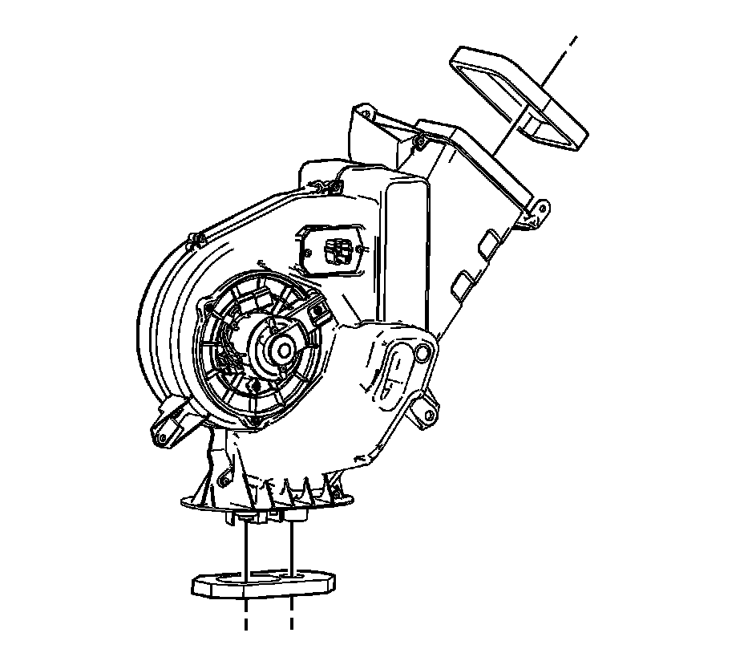
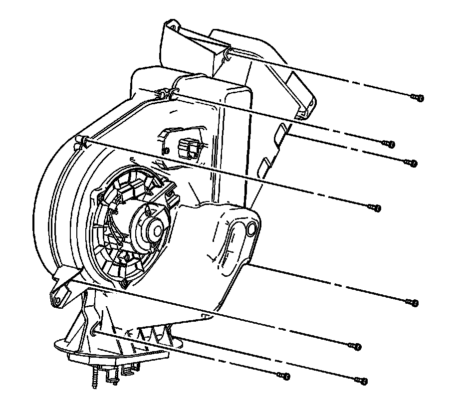
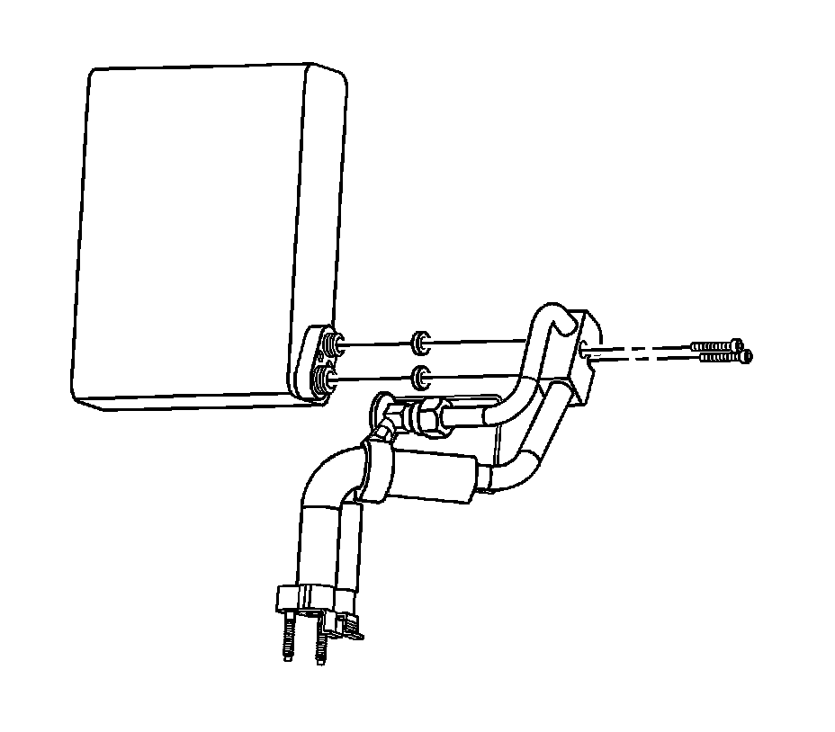

Auxiliary Air Conditioning Evaporator Replacement
Auxiliary Air Conditioning Evaporator Replacement
Removal Procedure

1. Remove the auxiliary HVAC module from the vehicle. Refer to Auxiliary HVAC Module Replacement (Auxiliary HVAC Module Replacement) .
2. Remove and discard the auxiliary HVAC module seals.

3. Remove the auxiliary HVAC module screws.
4. Separate the auxiliary HVAC module halves.

5. Remove the auxiliary evaporator from the auxiliary HVAC module.
6. Remove the auxiliary evaporator pipe assembly bolts from the evaporator.
7. Remove the auxiliary evaporator pipe assembly from the evaporator.
8. Remove and discard the O-rings.
Installation Procedure
1. If replacing the auxiliary evaporator core, add the specified amount of PAG oil directly into the auxiliary evaporator core. Refer to Refrigerant System Capacities ([1][2]Capacity Specifications) .
2. Install new O-rings to the auxiliary TXV assembly. Refer to O-Ring Replacement (Service and Repair) .
3. Install the auxiliary evaporator TXV assembly to the evaporator.
Notice: Refer to Fastener Notice .
4. Install the auxiliary evaporator pipe assembly bolts to the evaporator.
Tighten the bolts to 3.5 N.m (31 lb in).
5. Install the auxiliary evaporator to the auxiliary HVAC module.
6. Connect the auxiliary HVAC module halves.
7. Install the auxiliary HVAC module screws.
Tighten the screws to 1 N.m (9 lb in).
8. Install new auxiliary HVAC module case joint seals.
9. Install the auxiliary HVAC module to the vehicle. Refer to Auxiliary HVAC Module Replacement (Auxiliary HVAC Module Replacement) .